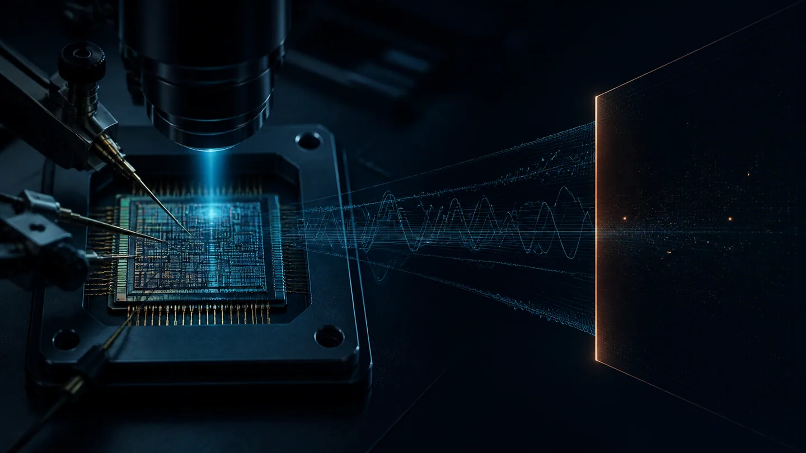

Fault changes execution or permissions
Boot path、guard read、wrapper 與 lock state 可能在 fault 下失去原先假設。Boot paths, guard reads, wrappers and lock states can lose their assumptions under fault.
OIP KNOWLEDGE BRIEF · SECURE STORAGE ARCHITECTURE
以 RP2350 公開案例界定 physical-access threat model，再由 SRAM PUF root、AES-256 encrypted OTP、address scrambling 與 Secure Controller 組成可防守的 system response；所有尚待 target-silicon evidence 關閉的限制同時保持可見。Use the public RP2350 case to define a physical-access threat model, then compose a defensible system response from an SRAM-PUF root, AES-256 encrypted OTP, address scrambling and a Secure Controller—while keeping every target-silicon evidence gap visible.
ABSTRACT · REFINED FOR EVIDENCE
RP2350 的公開結果顯示，permission、wrapper、fault detector 與 antifuse bit-cell opacity 都不能單獨成為最終防線。當 OTP bits 直接代表可用 root key、firmware secret 或 security configuration，成功 readout 的後果會非常接近完整 compromise。The public RP2350 results show that permissions, wrappers, fault detectors and assumed antifuse opacity cannot stand alone as the final barrier. When OTP bits directly encode a usable root key, firmware secret or security configuration, successful readout can approach full compromise.
Secure Storage 將 device-unique root 在上電時由 SRAM PUF 重建，以 AES-256 保護 OTP data，並用 address scrambling 與 Secure Controller 管理 mapping、provisioning、access 與 lifecycle。它的設計目標不是讓 OTP 永遠無法觀察，而是讓觀察結果停在 scrambled ciphertext。Secure Storage reconstructs a device-unique root from SRAM PUF behavior at power-up, protects OTP data with AES-256, and uses address scrambling plus a Secure Controller to govern mapping, provisioning, access and lifecycle. Its design goal is not to make OTP forever unobservable, but to make observation stop at scrambled ciphertext.
01 · PUBLIC ATTACK EVIDENCE
公開結果包含 voltage、laser、EM fault 與 FIB／PVC invasive analysis；這是控制與物理兩條平行 attack paths，不是所有 OTP 都會重現的單一因果鏈。它們支持同一條設計規則：memory-cell secrecy 不應是最後一道 confidentiality boundary。Public results include voltage, laser and EM faults plus FIB/PVC invasive analysis. These are parallel control and physical attack paths—not one causal chain that every OTP will reproduce. They support one design rule: memory-cell secrecy should not be the final confidentiality boundary.

Boot path、guard read、wrapper 與 lock state 可能在 fault 下失去原先假設。Boot paths, guard reads, wrappers and lock states can lose their assumptions under fault.
公開結果讀出相鄰 bit pair 的 OR；完整逐 bit recovery 被認為原理上可能，但未被示範。The public result recovered the OR of adjacent bit pairs. Complete per-bit recovery was considered possible in principle, but was not demonstrated.
只有在 encryption、scrambling、reconstruction、policy 與 lifecycle controls 都成立時，storage-state recovery 才應停在 protected data。Only when encryption, scrambling, reconstruction, policy and lifecycle controls all hold should storage-state recovery stop at protected data.
直接來源：Direct sources: Raspberry Pi challenge results ↗ · IOActive FIB/PVC analysis ↗
02 · SYSTEM RESPONSE
每一層只解決正確的問題：PUF 降低永久 key residency；AES 提供 confidentiality；scrambling 提高 mapping 成本；controller 約束 transaction 與 lifecycle。Each layer solves the right problem: PUF reduces permanent key residency; AES provides confidentiality; scrambling raises mapping cost; the controller constrains transactions and lifecycle.
上電重建 device-unique root；runtime path、helper data 與 zeroization 仍須驗證。Reconstruct a device-unique root at power-up; runtime path, helper data and zeroization still require assurance.
真正的 confidentiality boundary；需要 FI／SCA 與 key-derivation evidence。The real confidentiality boundary; FI, SCA and key-derivation evidence remain required.
增加 recovery 與 reconstruction 成本，但不取代 encryption。Raises recovery and reconstruction cost, but never replaces encryption.
管理 provisioning、APB access、error response、lifecycle 與 software contract。Governs provisioning, APB access, error response, lifecycle and the software contract.
Absent-at-rest 只處理永久 root target；runtime residency、reset interruption 與 zeroization 必須另行驗證。Absent-at-rest removes a persistent root target; runtime residency, reset interruption and zeroization still require separate evidence.
公開 helper data 仍需要 leakage、integrity、replay、rollback 與 fault evidence。Public helper data still requires leakage, integrity, replay, rollback and fault evidence.
Contractual ownership、qualification support 與 product-response scope 仍須在 target configuration 確認。Contractual ownership, qualification support and product-response scope must still be confirmed for the target configuration.
架構來源：Architecture source: Synopsys Secure Storage Solution ↗
03 · EVIDENCE GATES
OIP 報告應把結果分為 public evidence、vendor disclosure、system inference 與 validation gap；不要把設計意圖寫成完成驗證。The OIP report should separate public evidence, vendor disclosure, system inference and validation gaps; design intent must not masquerade as completed validation.
公開案例支持威脅模型與問題重要性。Public cases support the threat model and urgency.
產品頁支持功能、AES-256、PUF root、APB 與 OTP node availability。Product pages support functions, AES-256, PUF root, APB and OTP node availability.
PVT、aging、FI、SCA、invasive、DFT、zeroization 與 lifecycle evidence 尚需封閉。PVT, aging, FI, SCA, invasive, DFT, zeroization and lifecycle evidence must still close.
此 architecture 合理地把 OTP physical recovery 與 usable-secret recovery 分離；但特定產品的 resistance、certification 與 residual risk 必須以 target implementation evidence 確認。The architecture credibly separates physical OTP recovery from usable-secret recovery; resistance, certification and residual risk for a specific product require target-implementation evidence.
節點來源：Node source: Synopsys OTP platform evidence ↗
04 · OIP DECISION
TSMC OIP 的價值不是只列 N5／N3，而是把 exact macro、node、integration boundary 與 assurance deliverables 對齊。The OIP value is not simply listing N5/N3; it is aligning the exact macro, node, integration boundary and assurance deliverables.
Node · OTP macro · capacity · read mode · qualification · Secure Storage release status
Power/reset · APB privilege · DFT/debug · provisioning · firmware API · lifecycle
FI · SCA · invasive · PVT/aging · zeroization · residual risk · report owner
建議簡報結尾：Recommended close: 同意 target node 與 configuration 的 evidence closure plan，而不是宣稱所有攻擊已被消除。Agree the evidence-closure plan for the target node and configuration—rather than claiming every physical attack has been eliminated.
Architecture establishes the separation. Evidence establishes the assurance.Architecture establishes the separation. Evidence establishes the assurance.
檢視 Evidence LedgerReview the Evidence Ledger